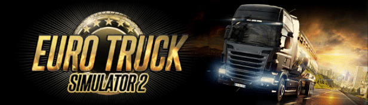

Euro Truck Simulator 2 foi lançado em 2012 pela SCS Software. Desde seu lançamento,
o jogo conquistou milhões de jogadores ao redor do mundo por oferecer
uma experiência de direção realista e detalhada.
O jogador começa realizando entregas simples para ganhar dinheiro.
Com o tempo, é possível comprar caminhões próprios, contratar motoristas
e expandir sua empresa de transportes por toda a Europa.
Uma das partes mais interessantes do ETS2 é a personalização dos caminhões.
Os jogadores podem alterar pinturas, acessórios, motores, rodas e diversos outros detalhes.
O ETS2 possui uma grande comunidade que cria mods para melhorar a experiência.
Existem mods de mapas, caminhões brasileiros, sons, gráficos e até novas empresas.
O modo multiplayer permite que jogadores viajem juntos em comboios online,
tornando as entregas ainda mais divertidas e interativas.
"Gosto do Euro Truck Simulator 2 porque é meu sonho ser caminhoneiro e além do mais, o jogo transmite uma sensação
de liberdade e tranquilidade durante as viagens. E o realismo dos caminhões e das estradas torna a experiência muito mais legal e real"